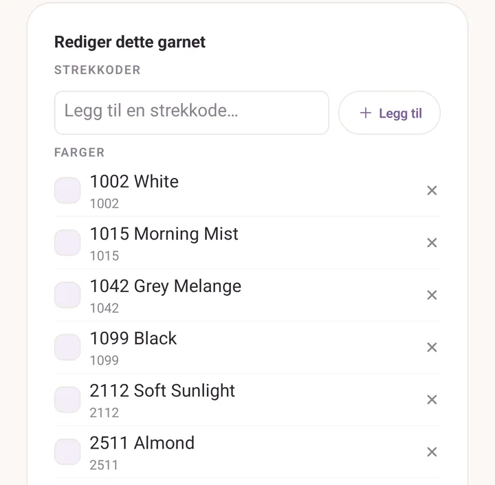

Strekkoder og garnbiblioteket
Å skanne en banderole skal ikke være en engangs utfylling. Det skal lære appen hva det garnet er, så neste skanning, av deg eller av en venn du deler med, har svaret klart.
Det er det garnbiblioteket er til for.
På denne siden 11
Den grunnleggende gangen
Du står i garnbutikken. Du kjøper to nøster av et garn du aldri har ført opp. Hjemme:
- Trykk Stash, og så Legg til.
- I skjemaet Legg til garn trykker du på strekkodeknappen ved siden av Velg fra biblioteket.
- Hold banderolen inne i rammen på Skann et nøste.
- Purl kjenner igjen garnet og fyller ut skjemaet: merke, navn, vekt, fiber, strikkefasthet, anbefalt pinne. Du legger til antall nøster.
- Trykk Legg til i stashen.
Den gjenkjenningen kommer enten fra den medfølgende katalogen eller fra et garn biblioteket ditt allerede kjenner.
Er koden ny, åpner skjemaet med strekkoden festet og ingenting annet utfylt. Du skriver inn merke, navn, vekt og resten, og lagrer. Den lagringen lærer opp biblioteket i stillhet: neste skanning av den koden blir gjenkjent.
En strekkode hører til en farge
En garnstrekkode er en butikkode for én nyanse, ikke for en hel garnlinje. Kassaapparatet og plukklisten virker slik, og det gjør Purl også.
Så en skannet kode fester seg til en fargevariant av et garn der den kan, og til selve garnet ellers. To følger du vil legge merke til:
- Skann en kode Purl har sett på en farge, og fargen kommer tilbake med den, fargeprøve og alt, ikke bare merke og navn.
- Skann en farge du allerede eier, og spørsmålet er det nyttige: Legg til et nøste på raden du har, eller Nytt fargeparti for denne banderolen.
Å rette en farge i skjemaet retter hva koden betyr. Koden flytter seg til fargen du lagret den under.
Skjermen Garnbibliotek
Åpne Mer, og så Strekkodeskanner under Verktøy. Skjermen heter Garnbibliotek.
Kameraet sitter øverst, levende og klart. Under det ligger de lagrede garnene dine, og et søkefelt.
Skann fra toppen av skjermen, bla i det du har lagret under.
Hva en skanning gir deg her:
- En kode du har fra før: et kort med Allerede i biblioteket ditt, med Rediger og Fjern.
- En ny kode: et kort med Lagre som et nytt garn, med feltene du skal fylle ut og Lagre garn nederst.
Trykk Skann en til i stripen øverst for å gå tilbake til kameraet.
Inne i et garn
Trykk på hvilken som helst rad i Lagrede garn for å åpne den. På en enhet som aldri har skannet, er den listen tom: søk i katalogen i stedet og trykk på et treff, som åpner den samme skjermen.
- Strekkoder: en chips for hver kode. Legg til en ved å skrive den inn i Legg til en strekkode…, fjern en med krysset. Flere koder per garn er hele poenget: produsentene sirkulerer koder mellom emballasjepartier, så et gammelt nøste og et ferskt bærer ofte hver sin.
- Farger: fargene Purl vet at dette garnet kommer i, hver med fargekoden sin. En farge du har skannet eller lagret selv viser også nyansen sin og strekkodene som peker på den; en som kom fra katalogen viser koden alene, med en tom fargeprøve, til en skanning fyller den inn. Trykk på krysset for å glemme en den har tatt feil av.
- Merke, Navn, Fiber, Vekt, Strikkefasthet, Anbefalt pinne, Meter per nøste, Gram per nøste.

Den medfølgende katalogen
Purl kommer med en utvalgt katalog over nordiske produsenter og garnlinjene deres: Sandnes Garn, DROPS, Rauma Garn, Dale Garn, Hillesvåg (Hifa), Du Store Alpakka, Camilla Pihl Garn, Viking Garn, Järbo, Svarta Fåret, Filcolana, Knitting for Olive, CaMaRose, Hjertegarn, Isager, Ístex og Novita. Merke, garnnavn, vekt, fiber og lengde for alle sammen, og navngitte fargeserier for mange.
Kataloggarn har merkelappen Katalog, og de holder seg utenfor listen til du søker, så dine egne lagrede garn ikke blir begravd under to hundre andre. En linje nederst forteller deg hvor mange som venter: Pluss N garn fra den innebygde katalogen, søk for å feste en strekkode eller endre et garn.
Å redigere et katalogarn gjør det til ditt. Din versjon skygger for den innebygde fra da av, og appoppdateringer kan sende nye katalogoppføringer uten å overskrive det du endret.
Du kan slå katalogen helt av: Mer, tannhjulet øverst, og så Innebygd garnkatalog under Standardvalg.
Dubletter
Ender du opp med to oppføringer av samme garn, som regel en med tom vekt den ene gangen og en utfylt den neste, dukker et kort opp øverst: N mulige dubletter: samme merke og garn. Trykk Slå sammen, så faller de sammen til én. Strekkodene slås sammen, tomme felter fylles fra de andre, og den mest komplette oppføringen beholdes.
To oppføringer av ett garn, foldet tilbake til én.
Feste en kode til et garn du allerede har
Skanner du en ukjent kode, men kan se produktet i biblioteket ditt, eller i katalogen, trykker du Eller fest denne strekkoden til et eksisterende garn… på kortet Lagre som et nytt garn. En søkbar velger åpner seg, Velg hvilket garn strekkoden hører til. Trykk på det riktige, så festes koden der, i stedet for å starte en oppføring nummer to for det samme garnet.
Dele biblioteket ditt
Delingsikonet øverst i Garnbibliotek skriver en .purlt-fil med hele
biblioteket ditt og åpner systemets delingsark. Send den på e-post, legg den i
Drive, del den som du vil.
Vennen din trykker på importikonet i sitt eget Garnbibliotek og velger
filen, eller åpner rett og slett .purlt-filen fra filbehandleren sin, og Purl
slår sammen:
- Garn som stemmer på merke, navn og vekt får strekkodene sine slått sammen, og de kjente fargene sine foldet inn. Der dere begge kjenner en farge under samme navn, beholdes din egen nyanse, og deres strekkoder legges likevel til.
- Alt som er nytt lander som en fersk oppføring.
Verken garn, prosjekter eller bilder krysser over. Bare biblioteket.
Svinghjulet
Over tid:
- Du skanner garn, og biblioteket ditt fylles ut.
- Du deler en
.purltmed en venn, eller den blir med i de vanlige.purl-sikkerhetskopiene dine. - De garnene foldes inn i den medfølgende katalogen i en senere Purl-utgave.
- Den neste som installerer Purl får dem fra dag én.
Hele katalogen er bygget på den måten, og innfoldingen er manuell med vilje.
En merknad om skanneren
Strekkodeskanneren er fortsatt eksperimentell, og Purl sier fra om det første gang du åpner den. Den leser EAN, UPC, Code 128, Code 39 og QR-koder. Strekkoder på banderoler er små og ofte på blankt papir, så gi den lys og hold banderolen flat.
Se også
- Stash: skanningen sett fra stashens side, og fargene Purl husker.
- Veiledning: garnet ditt, inn og ut: én skanning, fra start til slutt.
- Sikkerhetskopier:
.purlter ett av tre delingsformater, ved siden av.purlfor en hel sikkerhetskopi og.purlpfor en enkelt oppskrift.